Register Controllers
In the Controller window, you can register the controller rigs of the connected MayaScene.
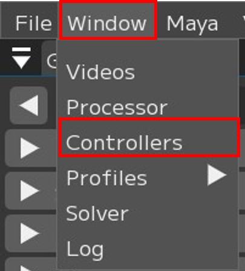 |
Window → Controller |
Note
For details on the Controller window, see User Guide/Menu/Window/Controllers.
What is a Region?
In FCS, facial part divisions are called Regions.
Note
Upper: Movements around the eyebrows, such as raising/lowering the eyebrows and furrowing the brow
Eyelid: Movements of the eyelids, such as blinking and squinting
Gaze: Eye direction movements, such as looking up/down/left/right and crossing eyes
Lower: Movements around the nose, cheeks, and mouth area, including all movements from the cheeks and nose downward
For animation analysis, register at least one controller rig for each of Upper, Eyelid, Gaze, and Lower.
You can also register the minimum and maximum values of controllers when registering controller rigs.
The min/max values are automatically populated, but please adjust them if the values are excessively large.
{kind=link}
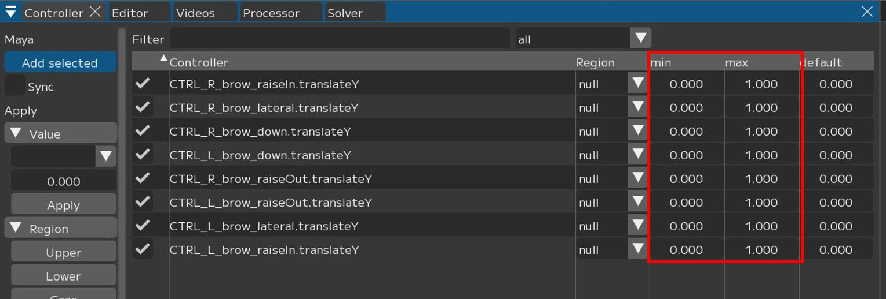
Warning
Non-numeric attributes such as “True/False” will cause malfunction, so please exclude them from registration.
Registering Controllers
The following explains how to register controllers using Upper registration as an example.
Select the controllers you want to register as Upper in Maya,
{kind=link}
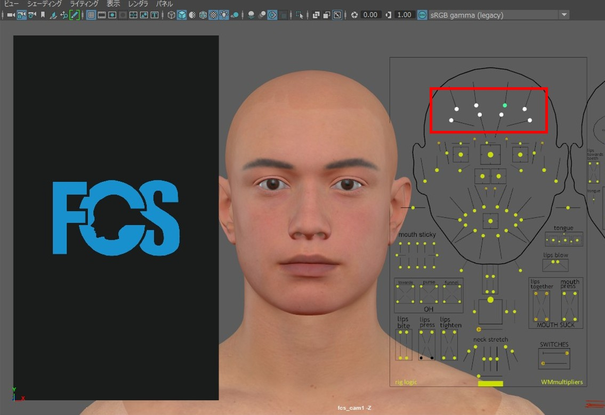
2. Press the [Add selected] button.

Once the controllers selected in Maya are displayed in “Controller”,
select the controllers you want to register as Upper using the checkboxes or [select All] (= select all).

Since we want to register as Upper this time, press [Upper].
When “Upper” is displayed in the Region column, the setup is complete.

Follow the same procedure to set up the other Regions (Eyelid/Gaze/Lower).
Registering consecutively
When you select controllers in Maya and execute [Add selected], the selected controllers are added to “Controller” and automatically checked.
{kind=link}
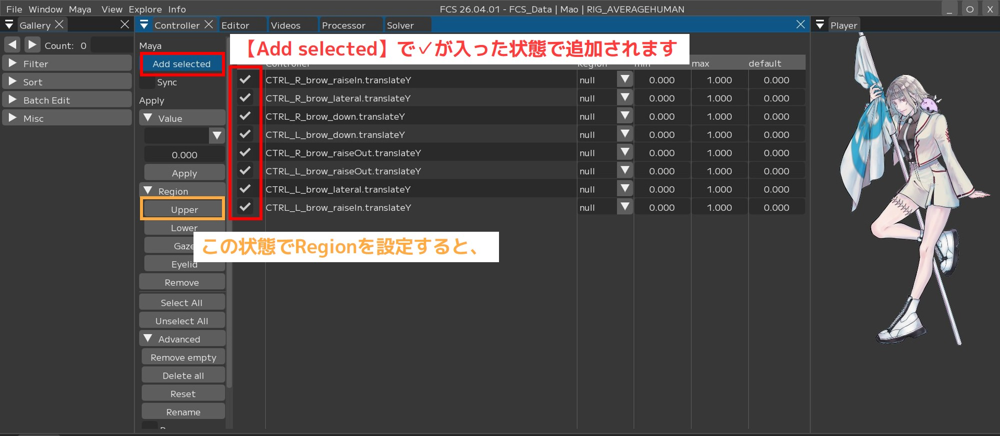
Pressing [Upper] in this state unchecks the previously checked controllers and changes their Region to Upper.
The figure below shows an example of selecting different controllers and pressing [Add selected] after that.
{kind=link}
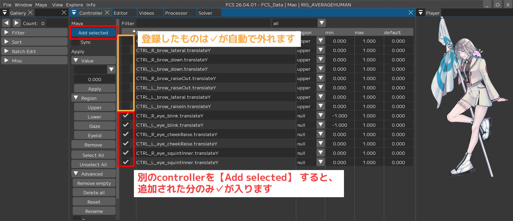
Only the newly added controllers via [Add selected] are checked.
In this way, when registering consecutively, the check marks are automatically applied to the newly added controllers.
Note that even if you press [Add selected] without setting a Region, the previously checked controllers will be unchecked and only the newly added controllers will be checked.
{kind=link}
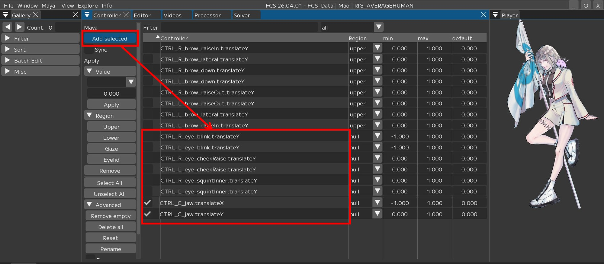
You cannot Save if there are controllers with an unregistered Region (null).
In the controller window, you can filter the display by Region type or registration status.
By setting the filter to ‘null’, you can display only controllers with no Region set.
Select the all dropdown tab in the upper right and change it to null.
This hides controllers that have a Region set and displays only unregistered controllers.
You can also filter by each registered Region by selecting Upper/Eyelid/Gaze/Lower.
{kind=link}
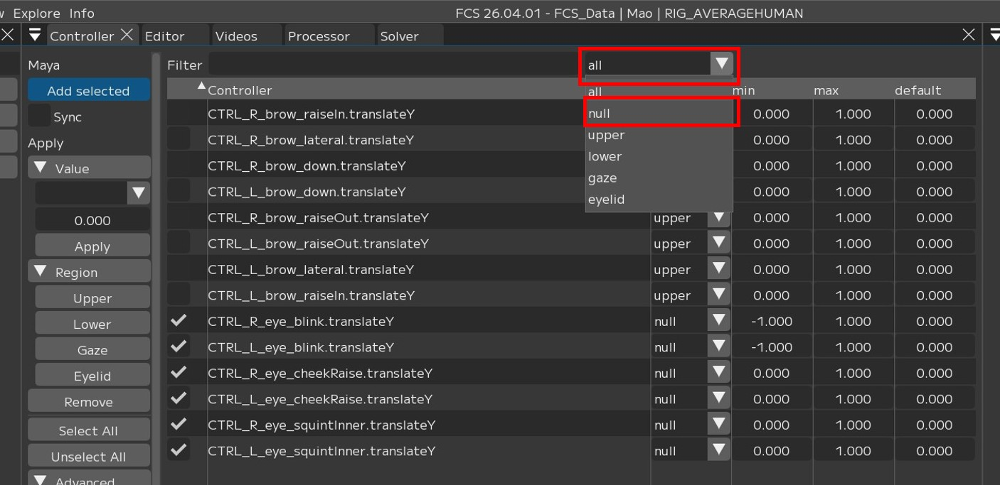
Note
[select All] selects only the currently displayed items.
[Unselect All] can be used to deselect all.
Since the display is filtered by null, registering a Region in this state will hide the controller.
Switch back to all to display everything.
When all is selected
{kind=link}
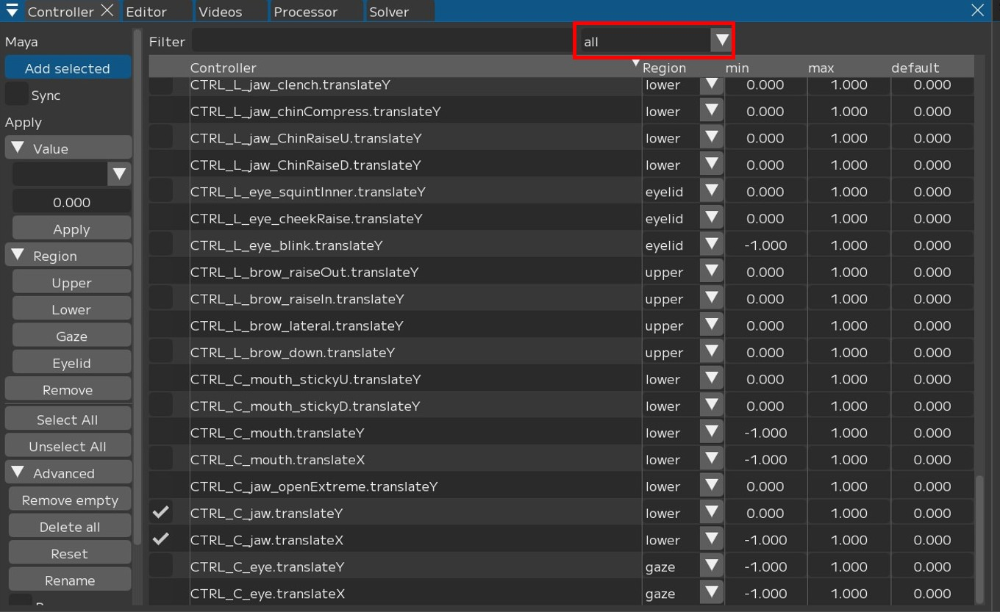
When null is selected
{kind=link}
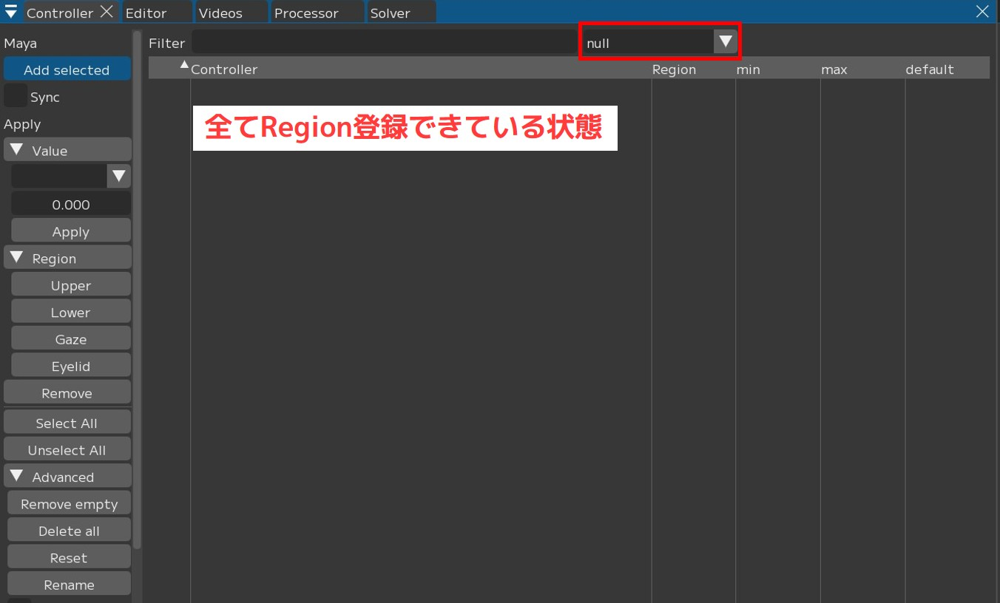
How to remove controllers you do not want to register
1. To delete a single controller
Select the controller you want to delete (check it) → press [Remove].
{kind=link}
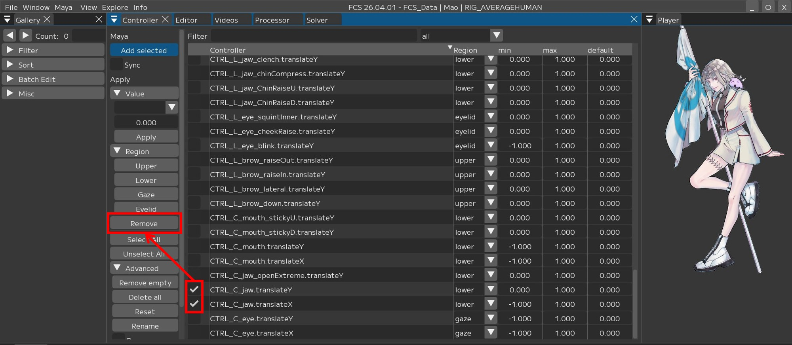
2. To delete all null controllers at once
Press [Remove empty].
{kind=link}
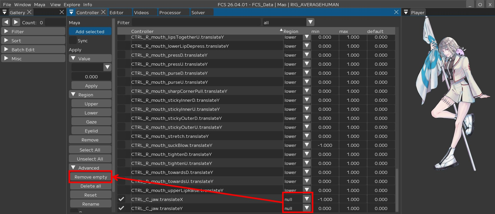
After registering all Upper/Eyelid/Gaze/Lower controllers, press [Save].
{kind=link}
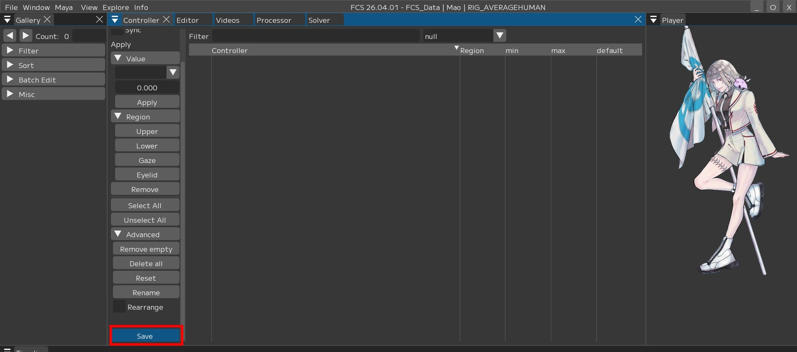
Warning
You cannot Save if there are controllers with an unregistered Region (null)
If you want to register controllers other than those in the manual
This manual uses UnrealEngine’s Metahuman, but any model created with other 3DCG software is supported as long as it has controller rigs that can be linked to each facial part.
Additionally, only the minimum required controllers are registered here, so you can add more controllers as needed.
If you cannot add controllers with Add select
Verify that the configured Maya version matches the Maya version used to create the scene.
Warning
Controllers cannot be read if the configured version differs from the Maya version used to create the scene.
If you want to change the registration order of controllers
Example: When L/R blink are separated and inconvenient, and you want to arrange them adjacent to each other
Check [Rearrange] under [Advanced],
then drag and drop the controllers you want to rearrange to change their order.
{kind=link}
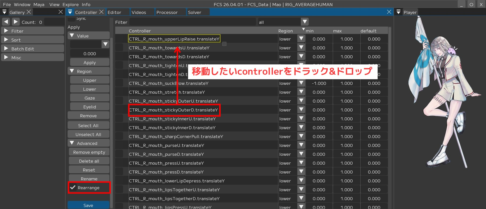
If you want to restore the registration order of controllers
Press [Reset] under [Advanced] to restore the order to the state at the last [Save].

Be sure to [Save] after rearranging the registration order for easier workflow.